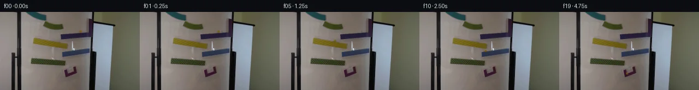

![首帧]()

Round 00
2026-11-05T11:28:21.083015+00:00像素候选变化代码 +189/−0inspection 更新
pixels 41431b490d93f860 · code c0363c89e7973a84
查看本轮 generate.py 真实 diff
--- previous/generate.py +++ current/generate.py @@ -0,0 +1,189 @@ +"""Local pixel animation: fixed photograph, analytic marble, numerical mechanics.""" +from pathlib import Path +import json +import numpy as np +from PIL import Image, ImageDraw +from scipy.ndimage import map_coordinates +from artifact_io import save + +ROOT = Path(__file__).resolve().parent +W,H = 256,144 +FPS,N = 4,20 +R = 2.15 +DT = 1/2400 +G = 1450.0 +# Upper-edge lines; the marble center follows the radius-offset line. +TRACKS = [ + dict(name='purple', lo=111.8, hi=162.0, m=-0.11, b=54.0), + dict(name='yellow', lo=61.0, hi=124.0, m=0.18, b=37.05), + dict(name='blue', lo=113.0, hi=164.0, m=-0.14, b=90.65), + dict(name='green', lo=58.0, hi=122.0, m=0.078, b=81.6), + dict(name='catcher', lo=123.7, hi=134.1, m=-0.35, b=158.9), +] + +def center_y(k,x): + q=TRACKS[k] + return q['b']+q['m']*x-R*np.sqrt(1+q['m']**2) + + +def simulate(): + count=int((N-1)/FPS/DT)+150 + records=[]; events=[] + x=147.4; y=center_y(0,x); vx=0.0; vy=0.0 + k=0; mode='track'; bounces=0; sleep=False + for step in range(count): + t=step*DT + records.append((t,x,y,vx,vy,k,mode)) + if sleep: continue + q=TRACKS[k]; m=q['m'] + if mode=='track': + a=G*m/(1+m*m)*(5/7) + oldx=x + x+=vx*DT+0.5*a*DT*DT; vx+=a*DT + y=center_y(k,x); vy=m*vx + if k==4: + if x<q['lo']: + x=q['lo']; y=center_y(k,x) + speed=abs(vx); vx=speed*0.19; vy=m*vx; bounces+=1 + events.append(dict(time=round(t,5),event='catcher left-wall contact',speed=round(speed,4))) + if bounces>=2 or speed<9: + vx=vy=0.0; sleep=True + events.append(dict(time=round(t,5),event='rest in catcher')) + elif x>q['hi']: + x=q['hi']; y=center_y(k,x); vx=-abs(vx)*0.22; vy=m*vx + events.append(dict(time=round(t,5),event='catcher right-wall contact')) + elif x<q['lo'] or x>q['hi']: + boundary=q['lo'] if x<q['lo'] else q['hi'] + x=boundary; y=center_y(k,x); mode='air' + events.append(dict(time=round(t,5),event='leave '+q['name'],x=round(x,3),y=round(y,3))) + else: + oldx,oldy=x,y + x+=vx*DT; y+=vy*DT+0.5*G*DT*DT; vy+=G*DT + target=k+1; nq=TRACKS[target] + surface=center_y(target,x) + if nq['lo']-R<=x<=nq['hi']+R and oldy<=center_y(target,oldx) and y>=surface: + k=target; mode='track'; y=surface + vx=0.52*(vx+nq['m']*vy)/(1+nq['m']**2); vy=nq['m']*vx + events.append(dict(time=round(t,5),event='land on '+nq['name'],x=round(x,3),y=round(y,3),vx=round(vx,3))) + return records,events + + +def clean_plate(initial): + yy,xx=np.mgrid[:H,:W].astype(float) + # Nearby unoccupied photograph texture, shifted along the purple upper edge. + donor=map_coordinates(initial.astype(float),[yy-0.88,xx+8,np.zeros_like(xx)],order=1,mode='nearest') if False else np.stack([ + map_coordinates(initial[:,:,c].astype(float),[yy-0.88,xx+8],order=1,mode='nearest') for c in range(3)],axis=-1) + rho=np.sqrt(((xx-146.6)/5.0)**2+((yy-35.8)/3.3)**2) + alpha=np.clip((1-rho)/0.24,0,1) + alpha=alpha*alpha*(3-2*alpha) + plate=np.rint(initial*(1-alpha[:,:,None])+donor*alpha[:,:,None]).astype(np.uint8) + return plate,alpha + + +def render_marble(plate,x,y,vx,vy,phase): + # Supersampled local overlay retains the fixed photograph pixel-for-pixel outside its footprint. + S=6 + x0=max(0,int(np.floor(x-7))); x1=min(W,int(np.ceil(x+6))) + y0=max(0,int(np.floor(y-5))); y1=min(H,int(np.ceil(y+7))) … diff truncated; 102 more lines …